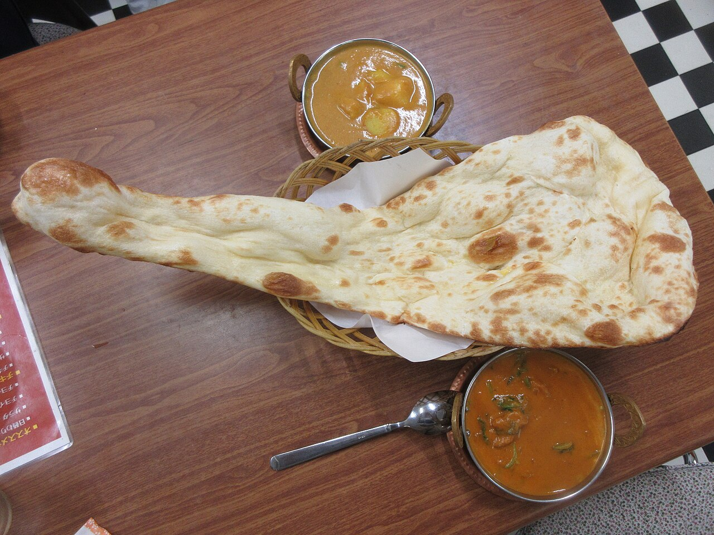
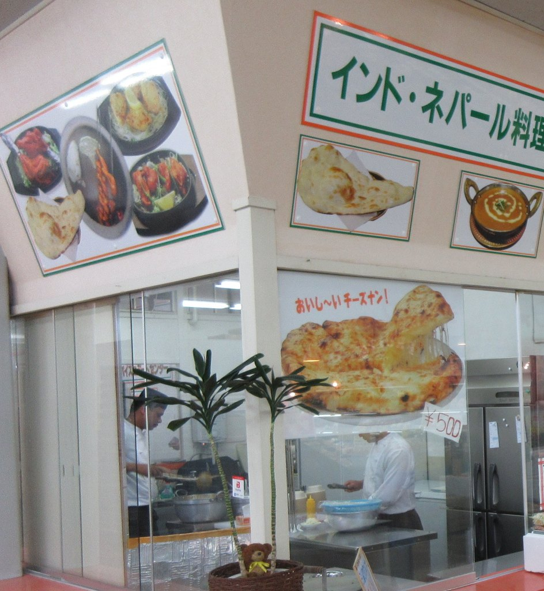
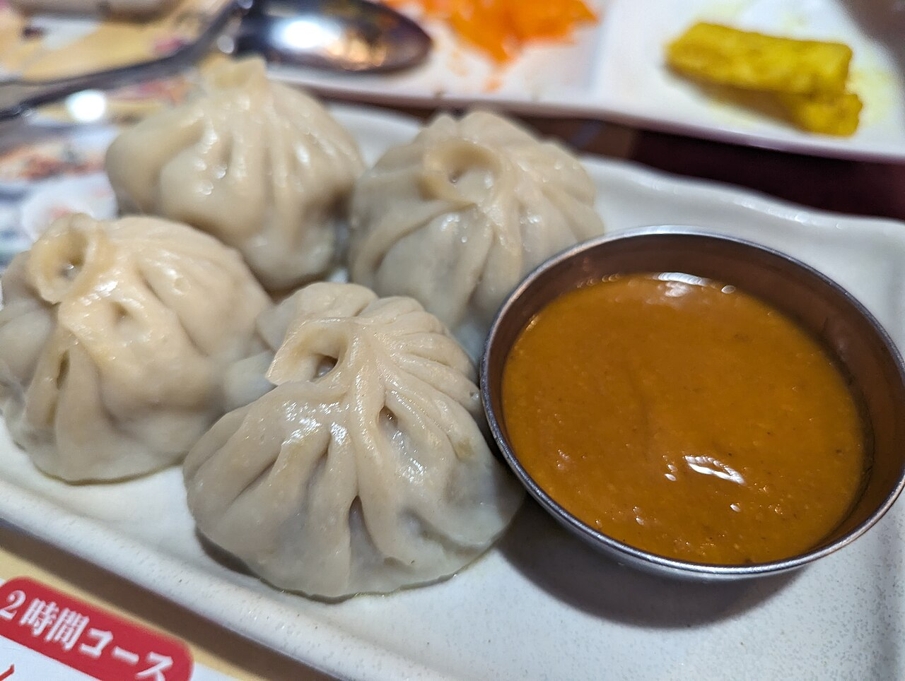
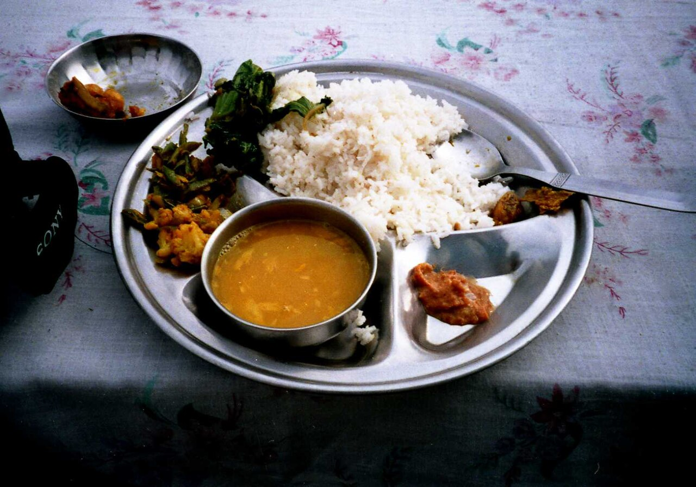
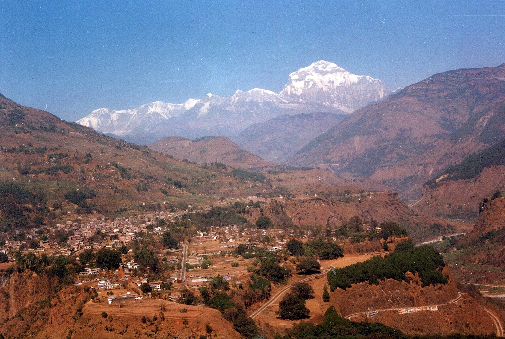
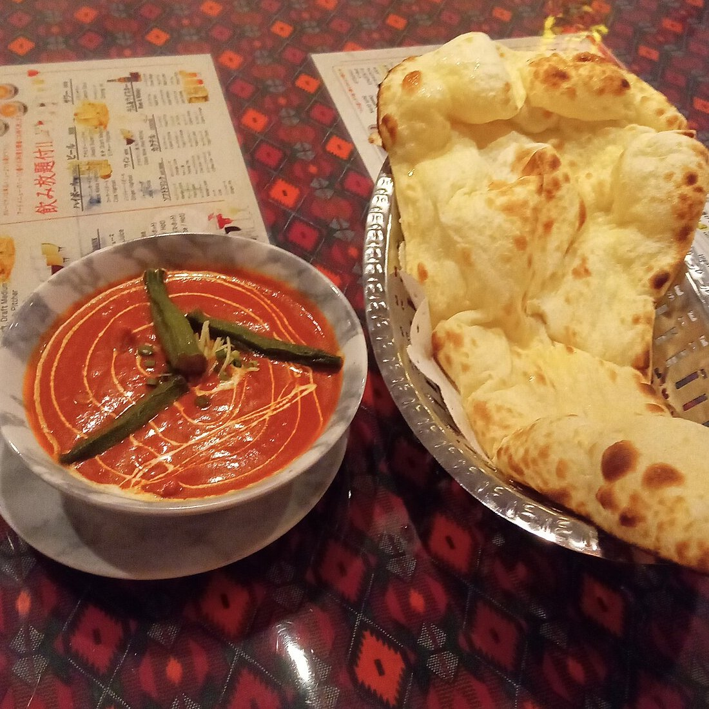
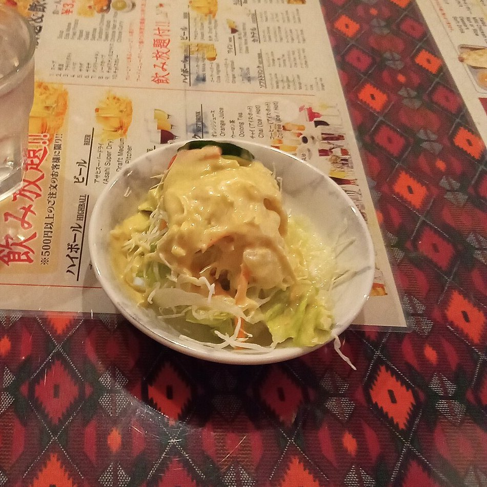
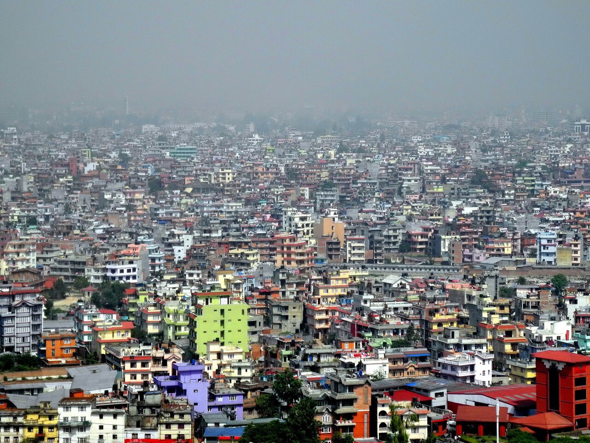

平日の夜、駅前のインドカレー屋。窓にはナンとカレーの写真が貼られ、ガラス越しに見える店内は、テーブルの多くが空いています。昼はにぎわっていても、夜はお客がまばら。そんな店を見かけたことはないでしょうか。
それでも、同じ場所で何年も続いている店は少なくありません。ガラガラに見えても、なぜつぶれないのでしょうか。手がかりは、ネパール西部の山あいの町、バグルンにあります。ジャーナリストの室橋裕和は著書『カレー移民の謎』（集英社新書、2024年）で、この町を「カレー移民の里」として訪ねています。

駅前でよく見かけるインドカレー屋。夜にのぞくとお客がまばらでも、何年も続いている店は少なくありません。料理人が次の料理人を呼ぶ連鎖や、日本に住むネパールの人の増え方をたどりながら、店が続くしくみをのぞいてみませんか。
平日の夜、駅前のインドカレー屋。窓にはナンとカレーの写真が貼られ、ガラス越しに見える店内は、テーブルの多くが空いています。昼はにぎわっていても、夜はお客がまばら。そんな店を見かけたことはないでしょうか。
それでも、同じ場所で何年も続いている店は少なくありません。ガラガラに見えても、なぜつぶれないのでしょうか。手がかりは、ネパール西部の山あいの町、バグルンにあります。ジャーナリストの室橋裕和は著書『カレー移民の謎』（集英社新書、2024年）で、この町を「カレー移民の里」として訪ねています。
多くの店は、ネパールの人が営む「インネパ」です。料理人が独立し、故郷から次の料理人を呼ぶ連鎖で増えました。修業先と同じ献立と少ない人手で、店を続ける費用が小さいのが強みです。さらに店は、家族が日本で暮らす在留資格の土台でもあり、簡単にはたためません。ただし、苦しい店や人もいます。
店の看板をよく見ると、「インド・ネパール料理」と書かれていることがあります。ネパール出身の人が営み、インド料理を中心に出す店は、略して「インネパ」と呼ばれます。数え方によって幅があり、全国に約2,000〜5,000軒あるとされます。
少なめに見積もった2,000軒でも、2022年1月の時点で、牛丼の松屋（977店）やカレーのCoCo壱番屋（1,238店）の店の数を上回ります。ただし、大きなチェーンではなく、ほとんどが個人の経営です。

源流は、1980〜90年代にさかのぼるとされます。インド人などが開いたインド料理店で働いていたネパール人の料理人が、独立して自分の店を開いていったのです。2000年代に入ると店は一気に増え、日本で暮らすネパールの人も増えていきました。
2025年末、日本に住むネパール国籍の人は30万992人。国籍別では5番目の多さです。ただし、その全員が料理人ではありません。「留学」の在留資格でも、ネパールは中国に次いで2番目に多い国です。


外国の料理人が日本で働くときは、多くが「技能」という在留資格（日本に住んで働くための許可の種類）で来ます。外国料理の調理なら、原則として10年以上の実務経験が条件です。働く店が決まっていることも必要です。この「10年」を示す書類は、のちに問題にもなります（第4章）。
料理人のままでは、雇われた店で働くことしかできません。会社をつくって経営者になれば、経営者の在留資格（当時は「投資・経営」）で、自分の店を開いて日本に住めます。
2000年代のはじめ、外国人が日本で会社を開く条件が変わりました。常勤の職員を2人以上雇う代わりに、500万円以上の出資でも認められるようになったのです。料理人たちは親族とお金を出し合って会社をつくり、経営者として独立していきました。
独立した店主は、故郷から料理人を呼びます。呼ばれた料理人も、やがて独立して、また次の人を呼ぶ。2008年ごろからは、妻や子どもを呼ぶ人も増えました（家族は許可を得れば週28時間まで働けます）。こうして同じ地方の出身者が、日本の各地に店を広げていったとされます。
連鎖を動かすお金もあります。呼ばれる料理人は、ビザ代や渡航費、手数料などの名目で100万〜200万円を払って来日する人もいるといいます。会社をつくる500万円も、料理人3人から150万円ずつ集めれば、店主の負担は50万円で済む──そんな例も、同書は紹介しています。

インネパの献立は、どの店もよく似ています。修業した店の献立やメニュー表を、そのまま使う店も多いといいます。著者の室橋は、家族を養うために「絶対に失敗できない」という思いの表れだとみています。新しい料理を考える手間も、少なくて済みます。
看板のバターチキンカレーとナンは、もとはインド北部の外食の料理で、ネパールの家庭料理ではありません。昼は、日本人好みに味つけしたカレーにナンやサラダ、飲み物をつけたセットを出します。ナンのおかわりが自由な店もあります。


人手のかけ方も違います。週刊現代（2024年5月14日）によれば、インド人の店では役割が細かく分かれることが多いのに対し、ネパールの人の店では1人が料理から掃除までこなす例が多いといいます。人を雇う費用が小さければ、お客が少ない時間があっても、すぐには赤字になりにくい理屈です。
夜は、酒やつまみの多い気軽な居酒屋として使われることもあります。さらに店は、経営者や料理人、その家族が日本に住むための在留資格の土台でもあります。店をたたむことは、暮らしの足場を失うことにもつながります。
まとめると、店は費用が小さいので、お客の少ない日が続いても持ちこたえやすく、そのうえ暮らしの土台なので、苦しくても簡単にはたためません。報道をたどると、この2つが重なって、ガラガラに見えても続く店が少なくないのだと考えられます。
店がいつまでも安泰なわけではありません。修業した店のすぐ近くに開いて、共倒れになる例もあるといいます。書評（HONZ）によれば、同書には「10人いたら、成功するのは2人くらい」という声が紹介されています。過当競争で経営が苦しい店も少なくない、と指摘する記事もあります。
働く人の苦しさもあります。同書の取材では、来日のお金を借金や土地の売却で用意し、その返済に追われる料理人もいるといいます。約束より安い月8万〜9万円ほどの給料で働く例や、年金に入っていない例も報告されています。
在留資格をめぐる不正も起きました。一部のオーナーが、10年の経験を示す在職証明などを偽造し、料理人のビザを取っていたと報じられています（PRESIDENT Online、2024年4月8日）。2015年ごろに入管が偽造に気づき、審査は厳しくなったといいます。
同じ記事では、ある在日ネパール人（Rさん）が室橋の取材に、お客が少ないのにつぶれない店について「本業はビザの手配」と語っています。あくまで1人の見方ですが、店が在留資格の土台であることの裏返しともいえそうです。
条件も変わりました。2025年10月16日から、経営者の在留資格（経営・管理）には、3,000万円以上の資本金と、日本人や永住者などの常勤職員を1人以上雇うことが必要です。経営経験3年以上か修士などの学位、本人か職員の一定の日本語力（日本語能力試験N2ほど）も求められます。
すでにこの資格で暮らす人には、2028年10月16日までの経過措置があります。それでも、500万円を出し合って独立する道は、ずっと狭くなりました。

ネパールの国内総生産（GDP。国全体で1年に生み出す価値）に対する、外国で働く人からの送金の割合。GDPの約4分の1に当たる額が外国から届く2024年。世界銀行のデータによる
ネパールの平均月収。日本の店で月10万円に満たない給料でも、故郷より多く稼げると考えて来日する人がいる2017/18年度の労働力調査。雇われて働く人の平均（国際労働財団、2019年）
インネパの多くには、ナンを焼く壺の形の窯「タンドール」があります。ネパール人の経営者のあいだでは、長く「タンドールのある店でないと、料理人の技能ビザが下りない」と信じられてきた、とカレーの取材を続けるライターの田嶋章博は伝えています。
けれども、国の基準が求めるのは「外国で考え出された料理」の技能です。窯があるかどうかは条件ではありません。タンドールを使わないネパール料理の専門店も、技能ビザで料理人を呼んでいます。
前例どおりにすれば審査で失敗しない──その慎重さが、窯とナンとバターチキンをそろえた、どこも同じ形の店を増やした一因とみられています。そして同じ形にそろえたことは、結果として、失敗しにくい店づくりにもつながっている面があります。
次にインドカレー屋に入ったら、メニューの端を見てみてください。モモやダルバートが載っていたら、それはバグルンのような山の町から来た人の、ふるさとの味なのかもしれません。